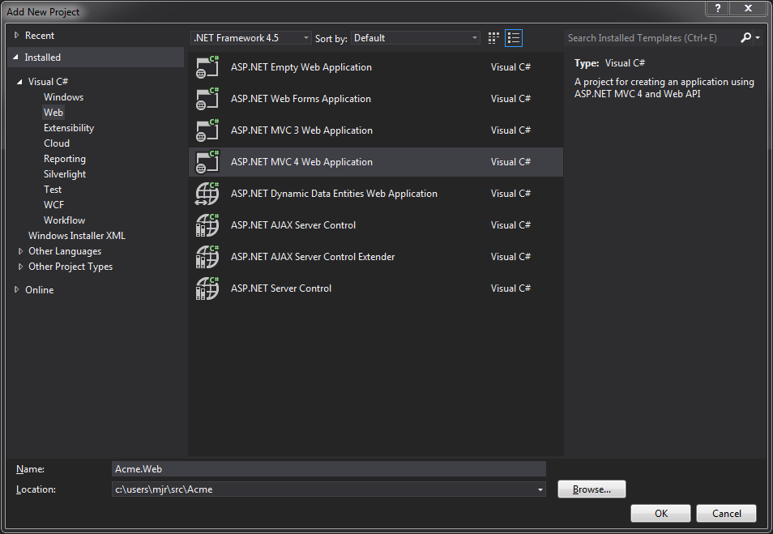

Walk-Through Creating an Acute-powered application
Create Solution
We'll begin by creating an empty solution in Visual Studio. The following instructions assume Visual Studio 2012, but other versions should be close enough.
File -> New -> Project.
Choose Templates -> Other Project Types -> Visual Studio Solutions, and select Blank Solution.
For the name, we'll use Acme.

Create Web Project
Now we need to create a web project to serve our content.
Right Click on the solution.
Add --> New Project
Select Visual C# --> Web
We'll select ASP.NET MVC 4 Web Application. For the moment, an empty project would suffice, but later we will add some services using Web API controllers.
Name the project Acme.Web
When Visual Studio prompts you to select a template, choose Empty
Create Acute Project
OK, now we get to the interesting stuff. Let's create our dynamic client application, powered by Acute.
Create a class-library project:
Right Click on the solution.
Add --> New Project
Select Visual C# --> Web